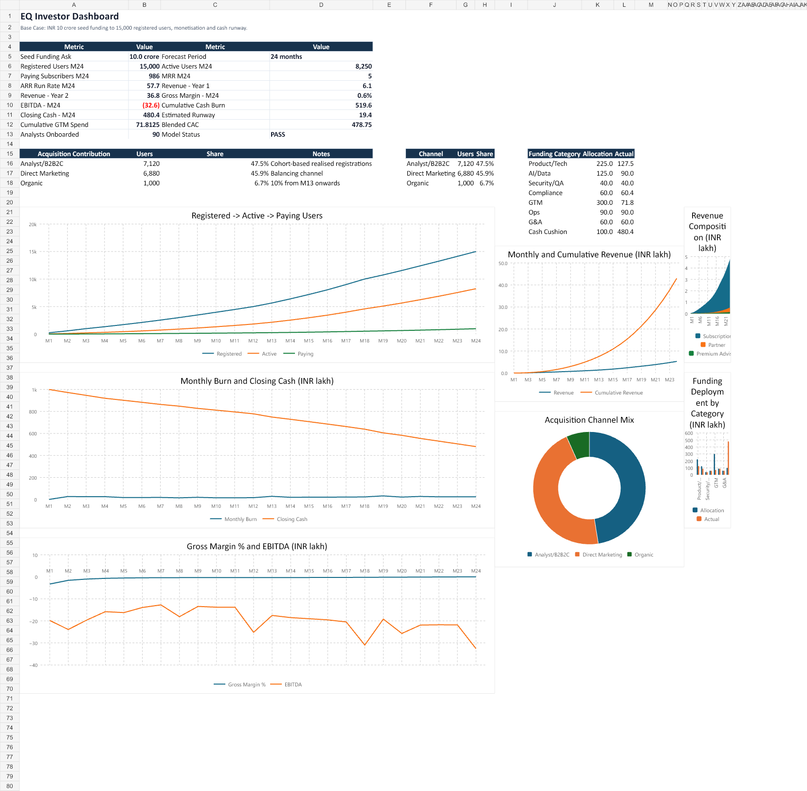
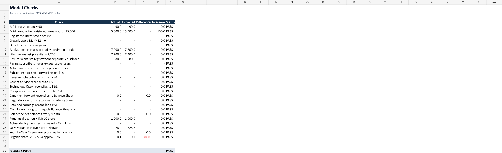
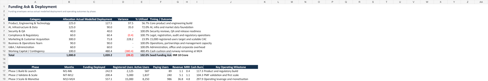
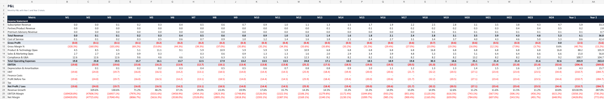
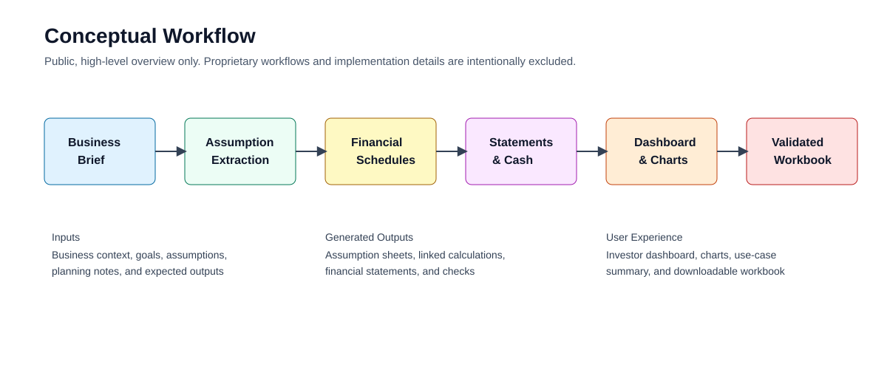

Finance models built from your brief.
NebulaCloud Studio turns business briefs, fundraising memos, and planning assumptions into working Excel financial models for CFOs, founders, finance teams, analysts, and investors.

What This Demonstrates
The sample project shows a detailed seed-stage company brief converted into a 24-month integrated financial model with assumptions, acquisition logic, revenue streams, cost schedules, financial statements, investor dashboard, and automated model checks.
Generated Outputs
The focus is on what Studio produces: a usable, editable, auditable finance deliverable that can support fundraising, board discussions, FP&A, diligence, and operating decisions.




Designed For Finance Decision-Makers
This capability is aimed at professionals who need to move from narrative assumptions to decision-ready numbers quickly.
Example Use Cases
Startup Fundraising
Convert a seed or Series A funding brief into a model covering users, CAC, revenue, gross margin, burn, runway, and capital deployment.
Board Planning
Create monthly operating plans with hiring, spend, revenue, cash, P&L, balance sheet, dashboard, and validation checks.
FP&A Forecasting
Turn department budgets and growth assumptions into a structured forecast workbook with management KPIs.
Investor Diligence
Evaluate CAC, conversion, churn, revenue per user, gross margin, burn multiple, runway, and funding efficiency.
SaaS Revenue Models
Model pricing, subscription roll-forward, churn, MRR, ARR, expansion revenue, and SaaS KPI dashboards.
Capital Allocation
Link funding envelopes to product, GTM, compliance, operations, G&A, contingency, and business outcomes.
Unit Economics
Build contribution-margin models for fintech, marketplaces, SaaS, and transaction-led businesses.
Runway Analysis
Forecast opening cash, receipts, operating costs, capex, working capital, burn, closing cash, and runway.
Regulated Startup Planning
Separate compliance cash spend, P&L expense, deposits, audits, and regulatory readiness milestones.
Technical Highlights
High-level capabilities demonstrated without exposing proprietary implementation:
Formula-Linked Workbook
Major outputs flow from editable assumptions and linked schedules.
Automated Validation
Model checks flag structural, reconciliation, and business-rule issues.
Investor Dashboard
Charts and KPI summaries translate detailed schedules into decision-ready outputs.
Bring your brief. Studio turns it into a working financial model.
Use Studio for fundraising models, board forecasts, FP&A planning, investor diligence, unit economics, and runway analysis.